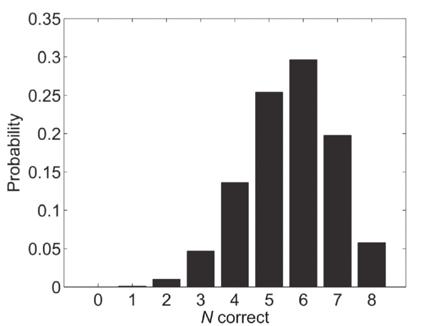
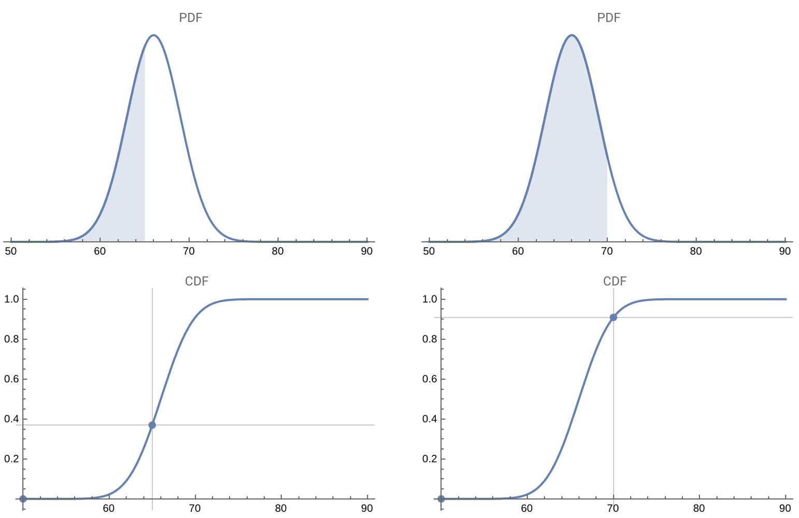
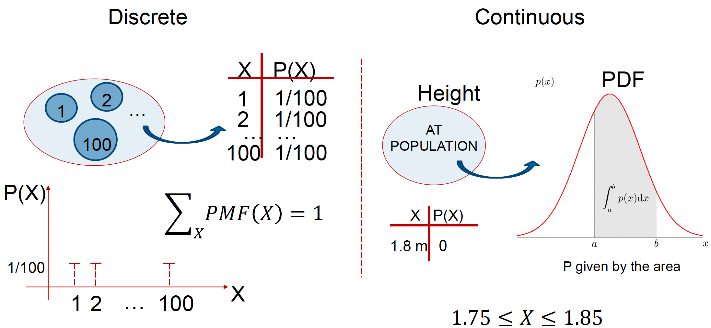
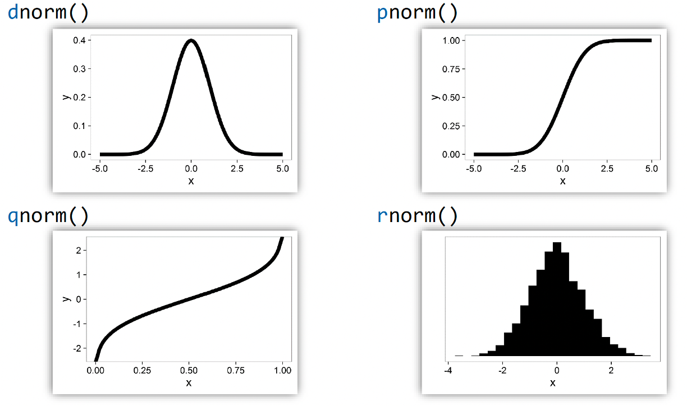
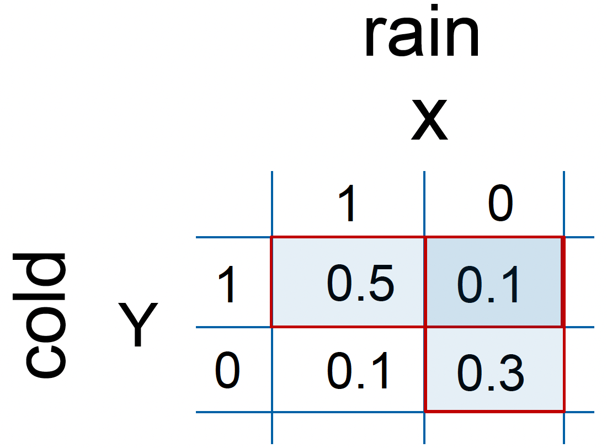
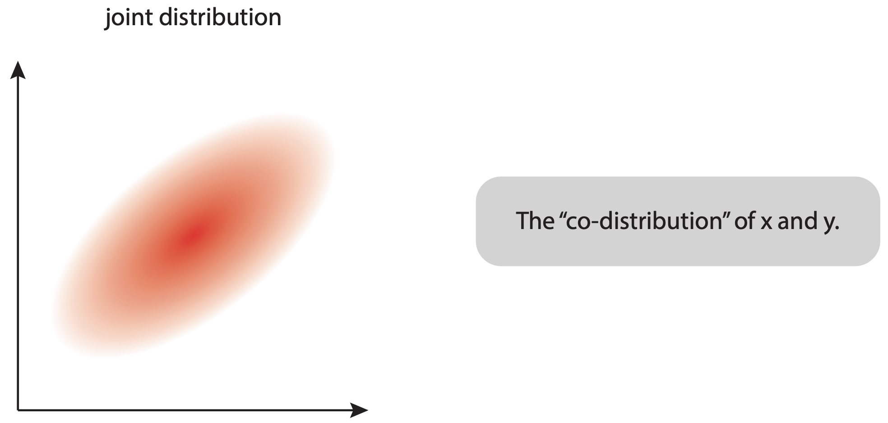
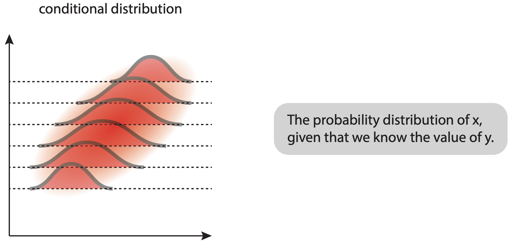
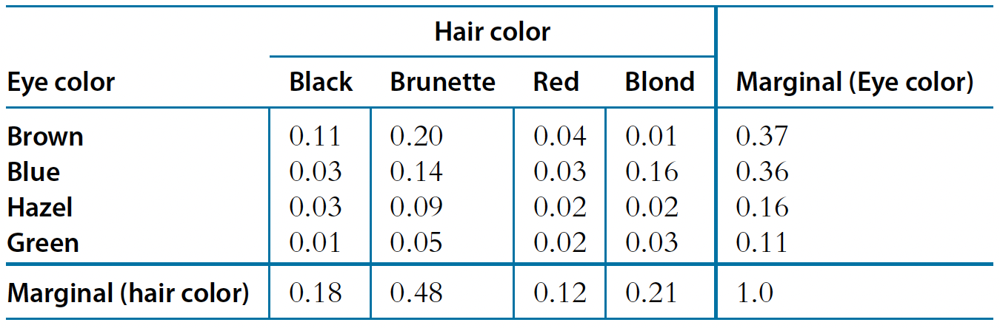
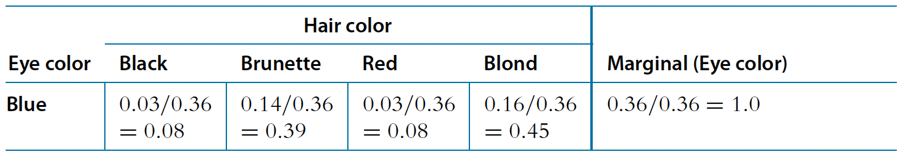

Probability and Bayes’ theorem
Introducing key probability concepts and how they lead to Bayesian statistics
Introduction to probability
Probability is a mathematical way of describing how likely an outcome or event is to occur. In other words, we assign numbers to a set of possibilities associated with an event.
Probability has several key properties1:
- The probability \(p\) of an event must be between 0 and 1
\[ p \in [0,1] \]
- The sum of all outcomes associated with an event should be 1
\[ \sum p = 1 \]
Discrete and continuous probability
There are two types of probability, discrete and continuous, which depend on the type of event.
In the event of a fair coin flip, there are two discrete outcomes: heads or tails. If we roll a fair die, there are six possible discrete outcomes, 1, 2, 3, 4, 5 or 6.
When the event is discrete, we describe probability as it’s mass, using a probability mass function (PMF). In the example below2, we’re looking at test scores where students can only get whole numbers of questions correct (0 to 8 correct answers). The graph shows the probability mass for each possible outcome, where each bar represents the probability of a student getting exactly that number of correct answers. For instance, we can see that getting 6 correct answers has the highest probability (around 0.3 or 30%).

We can use this PMF to calculate various probabilities, such as:
- The probability of a student getting exactly 5 correct (height of the bar at 5)
- The probability of getting 5 or more correct (sum of bars from 5 to 8)
- The probability of getting fewer than 4 correct (sum of bars from 0 to 3)
When dealing with continuous probability, where outcomes can take any value within a range (like height, weight, or reaction times), we use density functions to describe probability.
There are two key functions which help us work with continuous probabilities:
The Probability Density Function (PDF):
- Shows the relative likelihood of different values occurring
- The area under the curve between any two points represents the probability of observing a value in that range
- The total area under the entire curve must equal 1
- While the y-axis values can exceed 1, they aren’t probabilities themselves, they are arbitrary values
The Cumulative Distribution Function (CDF):
- Shows the probability of observing a value less than or equal to any given point
- Always increases from 0 to 1
- Useful for finding probabilities of ranges and percentiles

The PDF and CDF for a normal distribution at two points (65 and 70)
For example, the graph above3 depicts both the CDF and PDF for some normally distributed data. You can see how the density of the PDF and the value of the CDF both change when we calculate the probability of a value being less than 65 and then 70.
Remember that unlike discrete events, the probability of any exact value in a continuous distribution is actually zero - we must instead talk about ranges of values.
Here is another example of the difference between discrete and continuous probability:

For discrete data, let’s assume we have a bag of marbles, each labelled with a number from 1 to 100. We then reach into the bag, pull out a marble and place it back into the bag. In this case, we have a total of 100 possible events (\(X\)), each with a discrete probability of:
\[ P(X=x) = \frac{1}{100} \] The sum of all possible events is therefore:
\[ \sum_{x=1}^{100} P(X=x) = 1 \]
In the continuous data example, let’s assume we randomly sample the height \((H)\) of a number of people in the population. In a continuous variable like height, there are infinitely many possible values between, say, 1.75m and 1.85m. These values can be expressed with infinite precision (e.g., 1.81, 1.801, 1.800000000000…1). Because there are infinitely many values, the probability of any single, exact value (like exactly 1.8m) is zero.
Instead, we can calculate the probability of having a height between two values (e.g., between 1.75m and 1.85m), by calculating the area under the curve of the PDF over that range using integration:
\[ P(1.75 \leq H \leq 1.85) = \int_{1.75}^{1.85} f(h)dh \]
where \(f(h)\) is the probability density function for height.
Probability distributions in R
There are several probability functions in R that we can use. The example below demonstrates their use for a normal distribution with mean 0 and standard deviation 1. These four R functions help us work with this distribution in different ways:

dnorm() - Density Function: Shows the probability density at any point
pnorm() - Cumulative Probability Function: Shows the probability of getting a value less than or equal to x
qnorm() - Quantile Function: Given a probability, tells you the corresponding x-value
rnorm() - Random Number Generator: Generates random numbers following the normal distribution, plotted using a histogram
Joint, marginal and conditional probability
So far, we have only discussed the probability of a single event, i.e., a coin can either be a head or tail, height can be between two values etc. However, in the real world, there are often complex situations where we do not have one type of event, we might have multiple events.
When working with multiple events, we need to understand three important probability concepts:
Joint probability represents the likelihood of two events occurring together.
For any two events \(A\) and \(B\), we write this as \(p(A,B)\), which equals \(p(B,A)\).
For example, if we’re interested in weather conditions, \(p(\text{rain}, \text{cold})\) represents the probability that it is both raining and cold. This is the probability of rain intersecting with the probability of cold weather.
Marginal probability is the probability of one event occurring, regardless of the other event. We write this as \(p(A)\) for event \(A\), representing the probability of \(A\) irrespective of \(B\).
Using our weather example, \(p(\text{rain})\) represents the overall probability of rain, regardless of temperature.
Mathematically, we can express this as:
\[p(\text{rain}) = p(\text{rain}, \text{cold}) + p(\text{rain}, \text{not cold})\]
Conditional probability is the probability of one event occurring, given that another event has already occurred. We write this as \(p(A|B)\), representing the probability of \(A\) given that \(B\) has occurred.
The fundamental equation relating joint and conditional probability is:
\[p(A,B) = p(A|B)p(B)\]
In our weather example, \(p(\text{rain}|\text{cold})\) represents the probability of rain given that it is cold. This gives us:
\[p(\text{rain}, \text{cold}) = p(\text{rain}|\text{cold})p(\text{cold})\]
This relationship helps us understand how these different types of probability are connected and how we can calculate one from the others.
Let’s further look at how these probabilities work using concrete examples, where X represents rain (1 = rain, 0 = no rain) and Y represents cold (1 = cold, 0 = not cold).

From the table, we can read the joint probabilities directly:
\(P(X = 0, Y = 1) = 0.1\) (probability of no rain and cold)
\(P(X = 1, Y = 1) = 0.5\) (probability of rain and cold)
\(P(X = 1, Y = 0) = 0.1\) (probability of rain and not cold)
\(P(X = 0, Y = 0) = 0.3\) (probability of no rain and not cold)
Note that these sum to 1: 0.1 + 0.5 + 0.1 + 0.3 = 1
To find marginal probabilities, we sum across rows or columns:
For Y = 1 (cold):
\(P(Y = 1) = 0.5 + 0.1 = 0.6\) (sum across the top row)
For X = 0 (no rain):
\(P(X = 0) = 0.1 + 0.3 = 0.4\) (sum across the second column)
To find conditional probabilities, we use the formula:
\[ P(X|Y) = \frac{P(X,Y)}{P(Y)} \]
For example, \(P(X = 1|Y = 1)\) (probability of rain given it’s cold):
\[ P(X = 1|Y = 1) = \frac{P(X = 1, Y = 1)}{P(Y = 1)} = \frac{0.5}{0.6} = 0.833 \]
This means that when it’s cold, there’s about an 83.3% chance of rain.
Understanding continuous probability distributions
Unlike discrete probabilities where we can create a simple table of all possible outcomes, continuous events deal with variables that can take on any value within a range.
For these events we instead calculate the same three probabilities that we used for discrete events, but as distributions4.

When we have two continuous variables (x and y), their joint distribution shows how they vary together. The brighter/more intense regions show where combinations of x and y values are more likely to occur.

The conditional distribution shows how one variable is distributed when we fix the other variable at specific values. The shape of these distributions can change depending on which y-value we’re looking at, showing how the two variables are related.
The marginal distributions (shown on the sides of the joint distribution) represent the overall distribution of each variable independently, regardless of the other variable’s value. Mathematically, these are obtained by integrating the joint distribution over all values of the other variable.
Bayes’ theorem
So, now that we know how we calculate the probabilities of continuous events, we can move on to describe Bayes’ theorem.
Bayes’ theorem is a fundamental concept in probability theory that helps us update our beliefs about events based on new evidence. It builds directly on the concepts of conditional, joint, and marginal probability that we discussed earlier.
To get a better understanding of what Bayes’ theorem tell us, let’s derive it step by step using what we know about probability:
We start with the equation for joint probability that we saw earlier:
\[ p(A,B) = p(A|B)p(B) \]
We also know that joint probability is symmetric:
\[ p(A,B) = p(B,A) \]
Therefore:
\[ p(B,A) = p(B|A)p(A) \]
And since \(p(A,B) = p(B,A)\), we can write:
\[ p(A|B)p(B) = p(B|A)p(A) \]
Solving for \(p(A|B)\), we get Bayes’ theorem:
\[ p(A|B) = \frac{p(B|A)p(A)}{p(B)} \]
Each term in Bayes’ theorem has a specific interpretation:
- \(p(A)\) is the prior probability - our initial belief about event A
- \(p(B|A)\) is the likelihood - probability of observing the evidence if A is true
- \(p(B)\) is the marginal likelihood - total probability of observing the evidence
- \(p(A|B)\) is the posterior probability - what we want to know after observing evidence
So what Bayes’ theorem tells us is that we can find the probability of an event A happening, given that we observed event B, by using our prior knowledge about both events. It’s equivalent to updating what we believe based on new information.
You can think of Bayes’ theorem as starting with an initial guess about something (prior), seeing some evidence (likelihood), and then making a better guess (posterior) based on that evidence.
For example, let’s return to our weather scenario. If we want to know the probability it’s cold given that it’s raining, we would use:
\[ p(\text{cold}|\text{rain}) = \frac{p(\text{rain}|\text{cold})p(\text{cold})}{p(\text{rain})} \]
This allows us to update our belief about the temperature based each new observation of rain.
Let’s explore how Bayes’ theorem works in practice using a real-world example of the relationship between eye and hair colour in a population5.

The table above displays both joint probabilities for each combination and marginal probabilities for each characteristic, which is exactly what we need for Bayes’ theorem:
The joint probabilities \(p(A,B)\) show us how likely each specific combination is. For instance:
- Having brown eyes and black hair: \(p(\text{brown},\text{black}) = 0.11\)
- Having blue eyes and blond hair: \(p(\text{blue},\text{blond}) = 0.16\)
The marginal probabilities in the table give us \(p(A)\) and \(p(B)\):
- For hair color (bottom row): \(p(\text{brunette}) = 0.48\), \(p(\text{blond}) = 0.21\), etc.
- For eye color (right column): \(p(\text{brown}) = 0.37\), \(p(\text{blue}) = 0.36\), etc.

Using these values, we can then apply Bayes’ theorem, for example, to find the probability of blonde hair given blue eyes:
\[ p(\text{blond}|\text{blue}) = \frac{p(\text{blue}|\text{blond})p(\text{blond})}{p(\text{blue})} = \frac{0.16}{0.36} = 0.45 \]
To summarise, we have gone from the “prior” (marginal) beliefs about hair colour before knowing eye colour, to the “posterior” (conditional) beliefs about hair color given the observed eye colour. Without knowing the eye colour, the probability of blonde hair in the population is 0.21. But knowing that the eyes are blue, the probability of blonde hair is 0.45.
We will now tackle a problem posed in the excellent textbook: Doing Bayesian data analysis: A tutorial with R, JAGS, and Stan, by John Kruschke.
“Suppose that in the general population, the probability of having a rare disease is 1/1000. We denote the true presence or absence of the disease as the value of a parameter, \(\theta\), that can have the value \(\theta = ☹\) if disease is present in a person, or the value \(\theta = ☺\) if the disease is absent.
The base rate of the disease is therefore denoted \(p(\theta = ☹) = 0.001\).
Suppose(1): a test for the disease that has a 99% hit rate: \(p(T=+|\theta = ☹) = 0.99\)
Suppose(2): the test has a false alarm rate of 5%: \(p(T=+|\theta = ☺) = 0.05\)
Q: Suppose we sample a person at random from the population, administer the test, and it comes up positive. What is the posterior probability that the person has the disease?“
Let’s solve this step by step using Bayes’ theorem to find \(p(\theta = ☹|T=+)\):
First, let’s recall Bayes’ theorem: \[ p(A|B) = \frac{p(B|A)p(A)}{p(B)} \] In our case: \[ p(\theta = ☹|T=+) = \frac{p(T=+|\theta = ☹)p(\theta = ☹)}{p(T=+)} \] We know a few things already:
- Prior probability: \(p(\theta = ☹) = 0.001\)
- Hit rate: \(p(T=+|\theta = ☹) = 0.99\)
- False alarm rate: \(p(T=+|\theta = ☺) = 0.05\)
So, we have: \[ p(\theta = ☹|T=+) = \frac{(0.99)(0.001)}{p(T=+)} \] Meaning that we still need to calculate \(p(T=+)\) (total probability of getting a positive test result) in the denominator: \[ p(T=+) = p(T=+|\theta = ☹)p(\theta = ☹) + p(T=+|\theta = ☺)p(\theta = ☺) \]
Which gives: \[p(T=+) = (0.99)(0.001) + (0.05)(0.999) = 0.00099 + 0.04995 = 0.05094\] Now we can plug everything into Bayes’ theorem: \[p(\theta = ☹|T=+) = \frac{(0.99)(0.001)}{0.05094} = 0.0194\] Therefore, even though the test came back positive, there is only about a 1.94% chance that the person actually has the disease.
This surprising result shows that even with a very accurate test (99% hit rate), if the condition is very rare (0.1% of population), most positive results will actually be false alarms!
Footnotes
Kolmogorov, A. N., & Bharucha-Reid, A. T. (2018). Foundations of the theory of probability: Second English Edition. Courier Dover Publications.↩︎
Farrell, S., & Lewandowsky, S. (2018). Computational modeling of cognition and behavior. Cambridge University Press.↩︎
Wolfram Demonstrations Project. Connecting the CDF and the PDF.↩︎
Ma, E. J. (2018). Joint, conditional, and marginal probability distributions. Eric J. Ma’s Blog. Retrieved from https://ericmjl.github.io/blog/2018/8/7/joint-conditional-and-marginal-probability-distributions↩︎
Kruschke, J. (2014). Doing Bayesian data analysis: A tutorial with R, JAGS, and Stan.↩︎